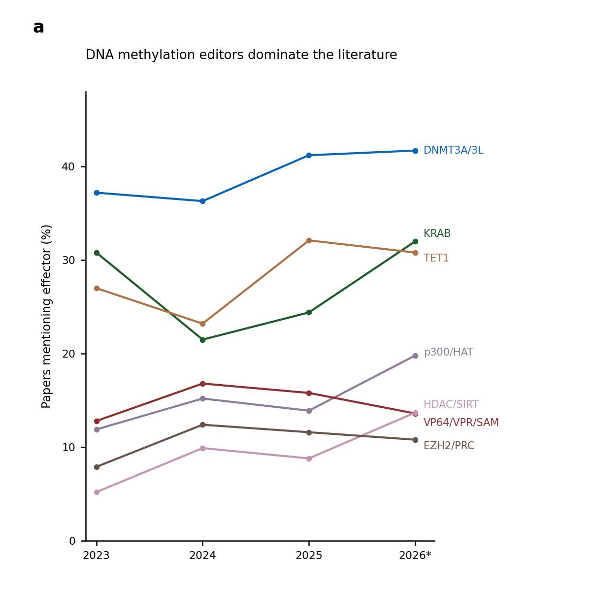
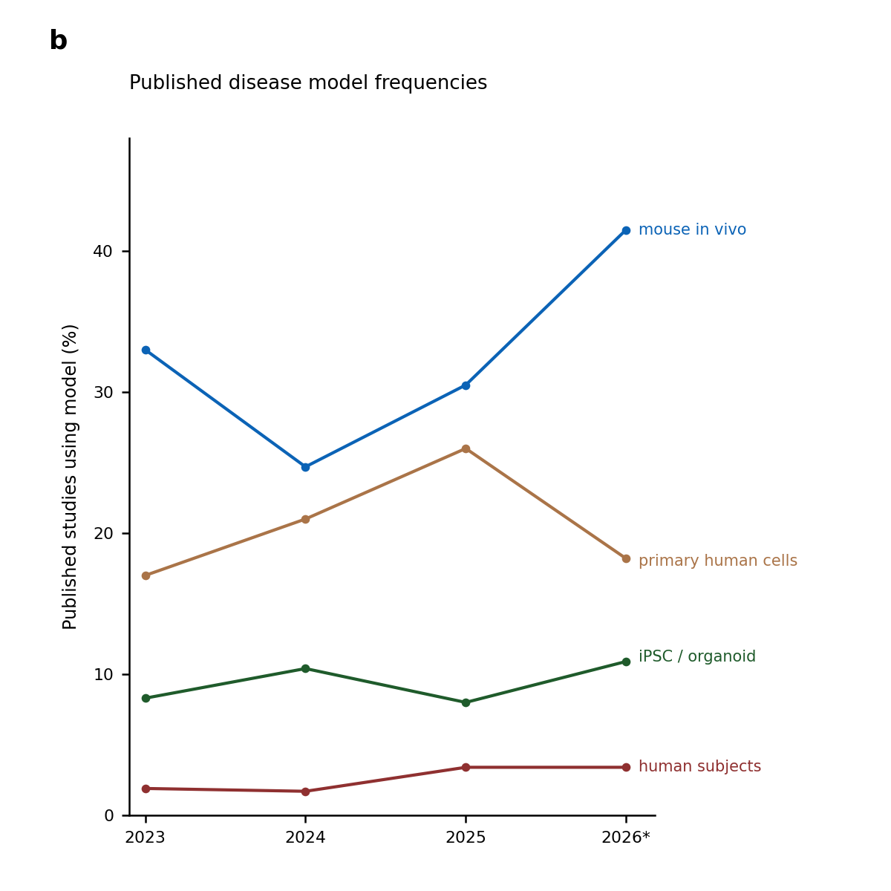
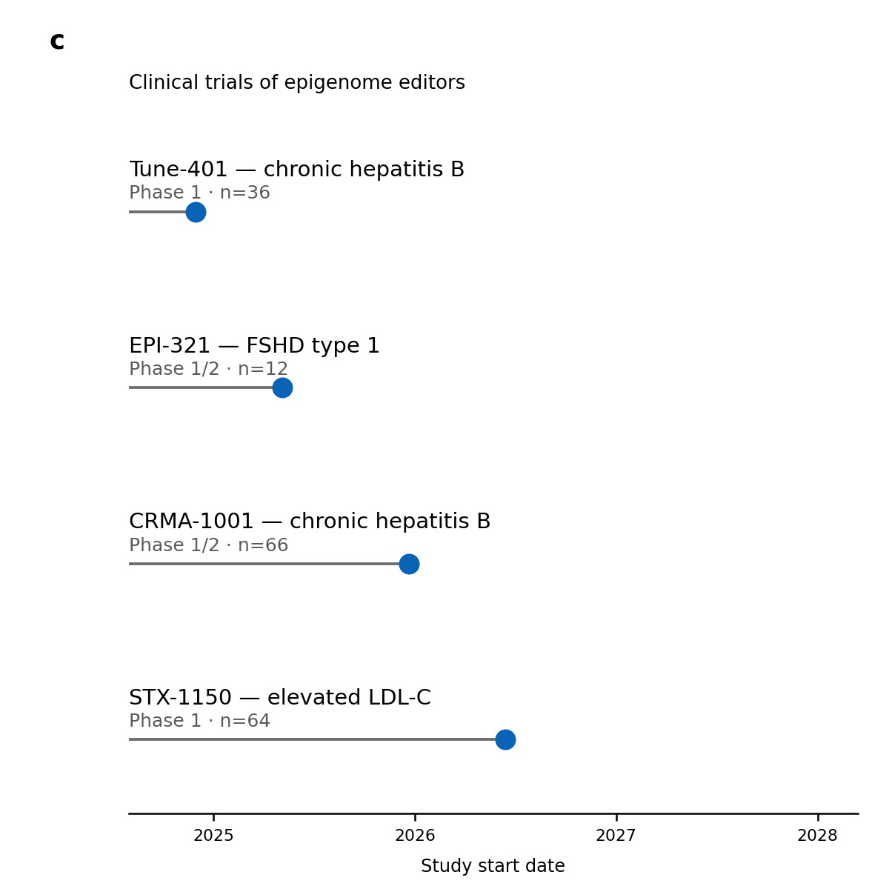

Missed connections
September 2026 · AI for drug discovery
Target selection is a tricky problem for drug developers, landing it among the greatest opportunities for LLMs to accelerate therapeutic discovery programs. Deciding which biological changes are worth building a medicine around requires first choosing a target—a protein, RNA, or regulatory element—together with the disease indication, patient population, and intervention modality most likely to produce meaningful benefit with acceptable health and capital risk profiles. Anthropic's newly-released Claude Science presents in part as a tool for nominating therapeutic targets and ranking them against biological and safety criteria. (1,2)
As a test of its nomination methods (using default Opus 5), I asked it to identify genetic targets suitable for the emerging therapeutic modality of epigenome editing. We prioritized high genetic evidence targets, especially those where standard-of-care interventions are inadequate or lacking entirely. Quickly, it produced a literature survey spanning 492 records and devised a ten-axis framework to rank 56 target-indication pairs, then broadened the search to 357 additional genes and examined regulatory features at 195 loci to test whether the proposed editing mechanisms fit the underlying biology.

Opus 5

Opus 5

Opus 5
Initial steps of analysis were well-executed: information retrieval, relevance classification, and eligibility filtering which together produced a sensible set of candidates from literature. A sophisticated reasoning process to rank the targets followed. Finally, the rubric produced a list with surprisingly low scores for high-evidence targets like PCSK9, SERPINA1, and ANGPTL3, many with long-established causality and some with already FDA-approved drugs or late-stage clinical programs.
So what happened? For present purposes we won't overinterpret those ten-axis score aggregates; they combine hard biological evidence with judgment calls about competitive whitespace, differentiation from existing therapies, and development feasibility. Instead we'll focus on just the first criterion of established genetic evidence (GE). GE was principally a database-classification lookup of published ClinGen annotations, and might have succeeded if it remained that way, but then adjustments were applied that summed gene-disease validity values with conflicting metrics that assigned negative penalties. Dosage-sensitivity annotations were shown to the scorer, but no explicit rule was in place to integrate haploinsufficiency (too-low expression) and triplosensitivity (too-high expression) values into a biologically coherent evidence score. Ideally such actions should trigger a relevance review rather than automatically become a hardcoded numerical input to the reasoning.
Two more decision-changing errors revealed a separate class of failure, again attributable to a collapse in biological interpretation. Literature survey had accurately surfaced IGF2 and MECP2 as actionable targets for epigenome editing, citing active R&D efforts, yet ultimately the agent's final proposal either (a) asserted a strategy that acts opposite to the therapeutically desired effect or (b) dismissed the program on a mistaken biological premise. Here, the genes in question are examples of a disease mechanism that acts in an allele-specific manner, i.e. distinction of the gene's maternal versus paternal copy (IGF2), or active-versus-inactive X chromosome (MECP2), is critical to its interventional rationale, and the agent failed to maintain account of allele specificity after data ingestion. Both failures are computationally the same mechanism: reasoning over a gene-level token, dropping the allele index and the sign (+/-) of gene-regulatory relation. Relevant scientific knowledge and an allele-integrity gate were present from the start, indeed triggering the targets' very insertion into analysis, but the workflow failed to apply these features consistently across sequential artifacts.
None of the surfaced failures trace to an arithmetic error or broken knowledge-base. Root causes occurred in reasoning or architecture layers: ClinGen values became abstracted into faulty, hardcoded evidence proxies with invalid fallback rules, ground-truth biology (allele identity, integrity, expression state) was carried as free-text, while direction stayed in numeric axes. Nothing required these fields to agree and primary literature was never back-checked, so the scoring system kept them separate. After entering the rankings, errors survived automated review and propagated across otherwise detailed, numerically consistent outputs to ultimately deliver unsound rationales as strategic plans. Collectively these are translational bottlenecks with definable roots, and solutions will come through mindful iteration.
With great reasoning comes great opportunity. There is no denying the LLM engine's formidable horsepower, but we must manage the means to connect it faithfully to biology before we truly move forward.
Figure data: the Claude Science literature survey described above, 492 records spanning 2023 to 2026, run on default Opus 5. Trial metadata is as reported in that session; dates are study starts and 2026 is a partial year. This is a single session, not a model-wide accuracy estimate.
← All essays